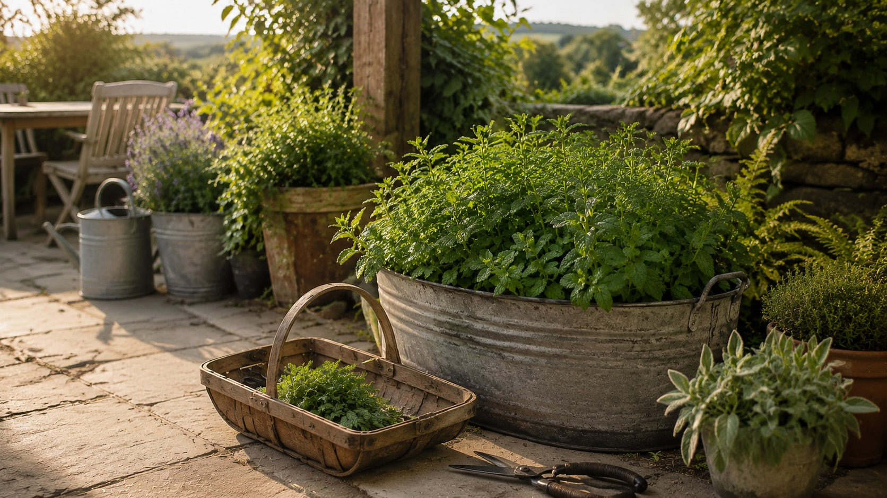
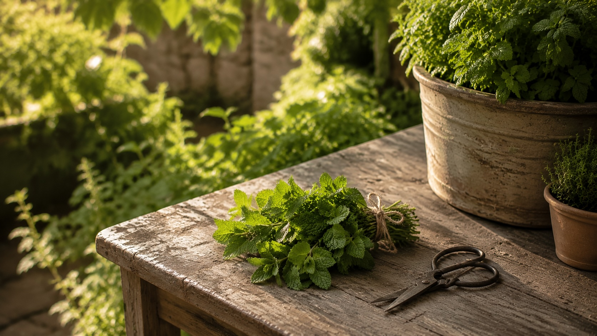
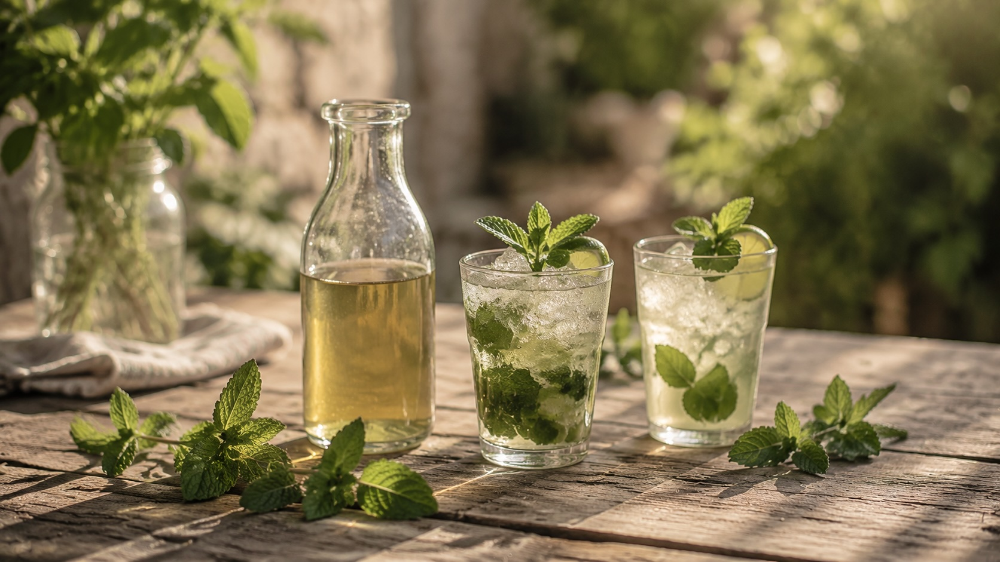

Mint Harvest Hub
Grow Mint. Make Something Refreshing. Share It Freely.
A garden-to-glass guide to the herb that always seems to offer enough for one more drink, one more pitcher, and one more conversation around the table.
New to mint?
Start with what you have.
If you landed here with a mint plant, a handful of leaves, or a pitcher in mind, this is the simplest path through the harvest. Grow it in a container, cut it often, save the extra, and let the garden give you something refreshing to share.
Step 01
Grow Mint
Keep it close, contained, and easy to reach so fresh leaves are always nearby when someone is thirsty.
Learn to grow →Step 02
Harvest Mint
Cut stems often, especially in the morning, and the plant will keep offering tender new growth all season.
Harvest well →Step 03
Make Mint Syrup
Turn extra mint into a jar of syrup that waits in the refrigerator for iced tea, limeade, cocktails, mocktails, and company.
Make syrup →Step 04
Pour Something Refreshing
Start with a Garden Mojito or Sparkling Mint Limeade and bring the harvest to the table.
See favorites →
From our garden
Mint is hospitality in leaf form.
Our mint grows in containers near the patio, close enough that I can step outside with scissors and come back with something that makes a drink feel cared for.
Every summer it gives more than we expect. Some goes straight into lemonade or iced tea. Some becomes syrup for later. Some gets shared with neighbors, friends, and whoever happens to be sitting around the table.
That is what I love most about mint. It is generous without being complicated. It turns ordinary water into something welcoming and reminds me that hospitality does not have to be fancy to be meaningful.
Rooted in the garden. Raised around the table.
Mint Harvest Hub
Everything we grow, preserve, and make with mint.
Mint is often the first herb that makes a garden feel generous. A few stems become syrup in the refrigerator, a sprig turns limeade into something special, and a full handful can become the drink everyone remembers. Start where you are — growing, harvesting, preserving, pouring — and follow the whole mint journey when you're ready.
The mint journey
From bed to bar, in order.
Every season begins in the garden. A morning harvest becomes mint simple syrup tucked into the refrigerator. Fresh sprigs find their way into summer mocktails and evening cocktails. Before long, family and friends gather around the table, and the cycle begins again. Rooted in the garden. Raised around the table.
01 · Grow
Start with a pot of mint
Spearmint and mojito mint are the varieties we reach for most because they stay bright, clean, and balanced in the glass.
Compare varieties →02 · Harvest
Cut while it is full and fragrant
Regular cutting keeps the plant generous and gives you tender leaves before heat and flowers turn the flavor harsh.
Harvest guide →03 · Preserve
Turn extra mint into syrup
Mint syrup is the bridge between the garden and the bar: a small jar of summer ready for lemonade, cocktails, tea, and sparkling water.
Make syrup →04 · Cocktail
Pour something fresh
The Garden Mojito keeps the focus where it belongs: fresh mint, bright lime, and a slower moment at the end of the day.
Make mojito →05 · Mocktail
Make it for everyone
Mint makes alcohol-free drinks feel cared for — bright, refreshing, and worthy of the same table as any cocktail.
Make limeade →06 · Grow again
Plant what comes next
Mint rarely grows alone for long. Basil, rosemary, thyme, lavender, and lemon balm each bring their own season and story.
Visit Harvest Hub →
Made with fresh mint
Start with the Garden Mojito.
One of our favorite ways to celebrate a summer harvest is with a Garden Mojito. Bright lime, plenty of fresh mint, and a slower pace at the end of the day. Nothing fancy. Just something worth sharing.
Why we keep planting it
There is always enough to share.
Mint is one of the first herbs that made me understand garden abundance. It grows quickly, forgives a lot, and somehow always seems ready when someone needs something cold, bright, and refreshing. A handful of leaves can turn lemonade into hospitality, iced tea into a treat, and a simple glass into an invitation. For a full comparison of cocktail herbs, see the Cocktail Herb Guide.
Finding your favorite
The Mint We Reach for Most
Not all mint belongs in the same glass. Some varieties are clean and bright, some are bold and cooling, and a few are better saved for syrup than muddling. Choosing the right mint is less about collecting every variety and more about finding the one that fits the way your family gathers.
Growing well
How to Grow Mint Without Letting It Take Over
Mint is generous, but it needs a little direction. Give it a proper container, steady moisture, and regular cutting, and it will reward you with enough fresh growth for drinks, syrups, garnishes, and more than a few last-minute gatherings. Get the container rule right, and mint becomes one of the easiest herbs to love. For zone-specific planting timing, see the planting guide.

Mint at a glance
Peak harvest
April–September
Best uses
Syrups • Mojitos • Limeade • Garnishes
Difficulty
Beginner friendly
Returns each year
Yes
What mint needs
- Sun: 4–6 hours of direct sun per day. Mint tolerates partial shade better than most herbs — afternoon shade in hot climates actually helps prevent bolting.
- Soil: Rich, moist, well-draining potting mix. Mint prefers more moisture than woody herbs like rosemary. Don't let it dry out completely between waterings.
- Water: Keep soil consistently moist. In containers, this may mean watering every 1–2 days in summer. Wilting leaves that perk up after watering are a sign it's thirsty rather than diseased.
- Container size: A minimum of 12 inches wide and deep. Larger is better — mint roots spread horizontally and a small pot will become root-bound quickly.
- Drainage: Essential. Mint likes moisture but not standing water. Always use a pot with drainage holes.
- Feeding: A liquid feed once a month during the growing season keeps production high. Mint is not particularly demanding, but regular feeding noticeably improves leaf size and vigor.
The container rule — and why it matters
- Always grow mint in a container. This is not optional. Mint spreads via underground runners that can travel several feet per season. Once it's in open ground, it's almost impossible to remove.
- If you want it in a bed: Bury a container (with the bottom cut out) so the rim sits 2 inches above soil level. This blocks runners without fully restricting the roots.
- Repot every 2–3 years. Mint roots become crowded and the plant loses vigor. In early spring, divide the root mass and repot into fresh compost.
- One pot per variety. Different mint varieties will cross-pollinate if grown together over time, and the flavor of hybrid offspring is often inferior.
- Overwinter: Cut the plant back hard in autumn and move it somewhere sheltered. It will die back and re-emerge in spring. In severe climates, bring containers inside to a cool, bright spot.
Garden tip
For more on container growing and companion planting, see our Garden Tips page. For zone-by-zone planting calendars, visit the Planting Guide.
By the time mint is growing well, the real question becomes less about keeping it alive and more about what to do with the abundance.
From the garden
Harvest Often, Then Invite Someone In
By midsummer, mint usually gives us more than we need. That is part of its charm. A few stems go into drinks, a few are tucked into the refrigerator, and before long we are looking for ways to keep the plant full, fragrant, and ready for whoever might stop by.
Harvest in the morning
Essential oils — the compounds that give mint its brightness in a drink — are most concentrated in the morning before heat causes them to evaporate. If you're making a batch cocktail or syrup for an evening, cut your mint that morning and keep it in a glass of water like cut flowers. The difference between morning-cut and afternoon-cut mint in a drink is noticeable.
Cut above a leaf node
Use clean scissors to cut stems just above a pair of leaves — the point where two leaves meet the stem. The plant will branch out from that node and become bushier rather than just growing taller. Avoid tearing or pulling, which can damage the stem. For garnishes, choose the newest, most tender stems at the top of the plant — these have the best color and aroma.
Take up to a third at once
Removing more than a third of the plant at one time stresses it and slows recovery. For regular cocktail use, take individual stems as needed. If you need a large harvest for a batch syrup or a party, cut the whole plant back by about half — it will recover fully within 2 to 3 weeks. A full cut-back to 3 inches above soil level is also healthy to do once or twice per season.
Pinch flowers immediately
As soon as you see flower buds forming, pinch them off. Flowering (bolting) is triggered by heat and long days, and once a mint plant flowers, the leaves turn bitter and the plant's energy goes into seed production rather than new foliage. Regular harvesting naturally delays flowering by mimicking the plant's natural growth cycle. In midsummer, a hard cut-back will reset the plant and produce a fresh flush of flavorful new growth.
Saving summer for later
Save the Refreshment for Later
Preserving mint is one of the simplest ways to stretch a good season. A jar of syrup, a tray of herb ice cubes, or a small bundle dried for tea can carry the garden into ordinary days long after the plant has slowed down.
Once mint is tucked away as syrup, ice cubes, or a small infusion, it stops being only a garnish and becomes part of how we gather.
Around the table
Using Mint Around the Table
Mint is one of those ingredients that makes a drink feel cared for. Sometimes it is muddled into the glass, sometimes it becomes syrup, and sometimes one fresh sprig is enough to make a pitcher of lemonade feel like it was made for company. See Bar Essentials for tool recommendations, and Recipes for full drink recipes using mint.
Ways we enjoy mint
Mint Drinks for Porch Time, Company, and Slow Evenings
Around here, mint rarely makes it to the compost pile. There is almost always another way to use it — a quiet evening cocktail, a pitcher of something alcohol-free for the table, or a simple glass of sparkling water made brighter with syrup from the refrigerator. Browse our full recipe collection for complete recipes, or visit the Cocktail Herb Guide for pairing ideas across all herbs.
Lessons learned
What Mint Has Taught Us
Mint is forgiving, but it still has opinions. Most problems come from letting it roam too freely, cutting it too late, or treating it too roughly in the glass. These are the small lessons that make the plant easier to live with and the drinks noticeably better.
After the growing, cutting, preserving, and pouring, the point is still simple: use what you have, make something beautiful, and invite people in.
Our favorites
The Ones We Make Again and Again.
A generous mint plant can go in a dozen directions, but these are the three we come back to most: one for preserving, one for celebrating, and one for everyone gathered around the table.

Favorite way to preserve mint
Mint Simple Syrup
The easiest way to save summer for later. A jar in the refrigerator turns iced tea, limeade, sparkling water, and cocktails into something that feels ready for company.
Make mint syrup →Favorite cocktail
Garden Mojito
Fresh lime, garden mint, and a slower pace at the end of the day. Simple enough for a weeknight, special enough for friends on the porch.
Make the mojito →Favorite family drink
Sparkling Mint Limeade
Bright, refreshing, and made for everyone around the table. Proof that a drink can feel festive without needing spirits.
Make the limeade →From bed to bar
What to Do With All This Mint
A pot of mint has a way of producing more than we expect. Some gets tucked into drinks shared on the porch. Some becomes syrup waiting in the refrigerator for tomorrow. A few handfuls are frozen for winter, and the rest reminds us that abundance is not something to manage — it is something to share.
Rooted in the garden. Raised around the table.

Preserve it
Mint Simple Syrup
Capture summer in a jar. A handful of fresh mint, a little sugar, and twenty quiet minutes create something you'll reach for all season long.
Make the syrup →
Pour it
Garden Mojito
Bright lime, fresh mint, and a slower pace at the end of the day. One of our favorite ways to celebrate a summer harvest.
Make the cocktail →Share it
Sparkling Mint Limeade
Fresh, bright, and made for everyone around the table. Proof that some of the best drinks don't need spirits.
Make the mocktail →
Save it
Harvest & Preserve Mint
Learn when to cut, how to store it, and simple ways to freeze summer for the months when the garden rests.
Read the guide →
What to grow next
Continue the Garden
Mint rarely grows alone. Nearby you'll usually find basil waiting for strawberries, rosemary destined for syrup, lavender bringing calm to the garden, and fruit trees preparing the next harvest. Explore what grows alongside mint — every plant has its season, and every harvest has a story.

Herb Guide
Basil Guide
Sweet, fragrant, and made for summer fruit, lemonade, and garden cocktails.
Explore basil
Herb Guide
Lavender Guide
A calming harvest for syrups, spritzes, and quiet evenings around the table.
Explore lavender
Herb Guide
Rosemary Guide
Woody, evergreen, and beautiful in bourbon, citrus, and winter syrups.
Explore rosemary
Fruit Guide
Plum Guide
From tree to jam, syrup, cocktails, and family-friendly drinks.
Explore plumsCommon questions
Frequently Asked Questions
Yes — mint is one of the easiest herbs you can grow. It's fast-growing, tolerates a range of conditions, comes back every year without replanting, and recovers quickly from hard cutting. The main mistake beginners make is growing it in an open garden bed, where it spreads uncontrollably. In a container, it's nearly foolproof.
Yes, mint grows well indoors on a bright windowsill that gets at least 4 to 6 hours of light. A south-facing window works best. Indoor mint plants tend to be less vigorous than outdoor ones and may need supplemental grow lighting in winter, but a single pot will still produce enough for regular cocktail use.
Spearmint is the most versatile cocktail mint — it's bright, moderately sweet, and works in everything from mojitos to mint juleps. Mojito mint is a cultivar of spearmint with slightly larger leaves and a cleaner, less medicinal flavor that holds up particularly well when muddled. Peppermint has a much higher menthol content and can overpower drinks; use it sparingly or only in syrups.
Freezing works best when you process mint first. Make a simple syrup, freeze it in ice cube trays, and you have a ready-to-use cocktail ingredient all winter. You can also freeze whole mint leaves in water for herb ice cubes that look beautiful in drinks. Freezing bare leaves without liquid makes them limp and discolored — fine for cooking but not useful as a garnish or for muddling.
Harvest mint every 2 to 3 weeks throughout the growing season, or more often if the plant is growing fast. Regular cutting is what keeps mint productive — a plant that's left to grow unchecked will bolt, flower, and turn bitter. You can cut the whole plant back to about 3 inches above the soil and it will regrow fully within 3 to 4 weeks.
Yes. Mint is a perennial herb in zones 3 through 11, meaning it dies back in winter and regrows from the roots each spring without replanting. In containers, it may need repotting every 2 to 3 years as the roots become crowded. Divide and repot in early spring for the best results.
Bitter mint is almost always the result of the plant flowering — a process called bolting. Once mint flowers, it redirects energy from leaves to seeds, and the remaining leaves turn bitter. Prevent it by harvesting frequently and pinching off any flower buds as soon as they appear. Heat stress and inadequate water can also cause bitterness, as can over-muddling, which crushes the stems and releases harsh plant compounds.
Dried mint is not recommended for muddling or as a garnish — it has very little of the fresh, bright character that makes mint useful in drinks. It can work in a syrup where you're extracting flavor over heat, though fresh mint produces a noticeably better result. If you have surplus mint, making and freezing a fresh syrup is a much better preservation method than drying.
The only reliable solution is to grow mint in a container rather than directly in the ground. Mint spreads via underground runners that can travel several feet from the parent plant in a single season. If you want to grow it in a garden bed, bury a container (with the bottom cut out) in the soil so the rim sits 2 inches above ground — this blocks runners without fully containing the roots. Once mint is established in open ground, it's very difficult to eradicate.
Rum is the classic pairing — the mojito exists for good reason. Bourbon is a natural match, especially in the Mint Julep, where mint's brightness cuts through the spirit's sweetness. Vodka is neutral enough to let mint lead. Gin works well with mint, particularly London Dry styles where the botanicals complement rather than compete. Mint is also one of the best herbs for alcohol-free drinks, where it provides complexity without needing a spirit to anchor it.
Drink responsibly. Every mocktail on this site is just as good as the cocktail version. Enjoy the garden. Enjoy the bar. Be safe, be kind, and look after each other.